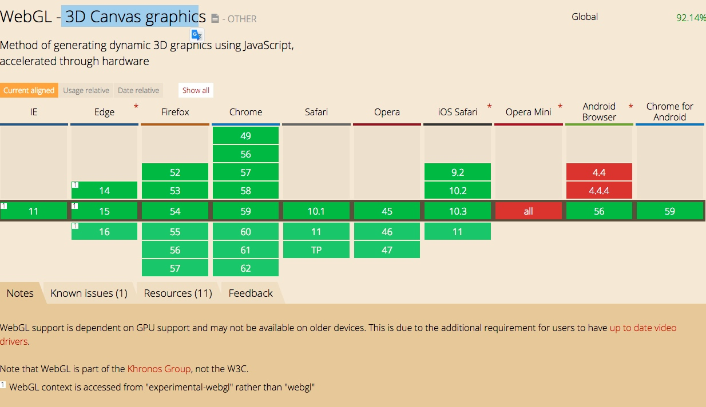

WebGL 浏览器支持
销售易Pass
字段
一个对象上的字段使用数据类型来定义这个字段可以包含哪些内容，特殊的字段 类型在销售易平台将会有不同的展现方式，有时也将有不同的响应方式。
Table 1 字段类型
字段类型 描述
Bool 布尔值，数据通常存储为 Y, N，展现为是、否选项或者 check box。
Currency 标示存储数据为货币数额，此类型字段将支持多币种功能。 ID 系统级唯一标识符。
Sequence 自增长的数字序列。
Integer 整数类型。
Note 长字符。
Number 数字类型。
Phone 电话类型。显示时，可分割区号。
Email 电子邮件地址类型。
Text 字符类型，长度不超过 2000 字符。
Date 日期类型，仅保存和显示日期，无时间信息。
Datetime 日期时间类型，保存和显示日期 + 时间信息。
URL 保存超链接，用户点击此字段可以打开浏览器前往该网址。
URL 保存超链接，用户点击此字段可以打开浏览器前往该网址。
Open API
销售易 Open API 基于 REST API 的风格，支持 GET、POST 操作。 在使用 Open API 注意时，请注意如下限制:
— 每日次数访问限制:
Open API 每日访问次数与购买的 API 用户数有关，每个租户每日可用用 户 1000 次;假如您购买了 100 个 API 用户，那您每日的 API 访问次数 为 1001000=100000 次
— 每秒并发数限制
每个用户在 1 秒内可调用 15 次 API
Bulk API
批量 API 是基于 Open API，并对载入或删除大型数据集进行了优化。通过提 交批次，您可以使用异步查询、插入、更新、更新插入或删除许多记录。
在使用 Bulk API 注意时，请注意如下限制:
— 每天每账号Bulk API请求次数最大1000
— 每秒每账号Bulk API请求次数最大为15
— 每账号文件上传大小限制20M
— 每异步任务提交数据量最大为5000
— 每异步任务查询返回数据量最大为5000
销售易 Open API 支持以下两种 OAuth2.0 授权方式:
• 授权码模式
• 密码模式
注意:在使用 OAuth2.0 认证前，您必需先在销售易的后台管理系统创建连接器， 此连接器与您需要对接的应用程序相关，详情参见创建连接器。
2016年工作总结
回顾2016
忙忙碌碌又是一年，每到年终做工作总结总是在思考这一年做了什么，有哪些事情没有做。没有做的那些事情又是因为什么原因导致的。似乎总觉得自己做了好多事情，但是这些事情都是那些微不足道，还不足以纳入总结当中。。。。。。只好在这里回顾一下一年里做过的各种“微不足道”事情，算是对自己2016年总结，也是为了自己2017年更好的工作、学习做准备。
2016年自己的计划
- 自己的小金库能够充实起来
- 读5本技术书、3本杂文
- 掌握Swift并写出一个应用
- 实现博客流量日均50pv
- 来一场说走就走的旅行
- 掌握Python并搭建服务器 严于律己
说来惭愧，上述计划没有一项是完整实现的。。唯独第二项完成的只能说是相对比较好的，一年的时间零零散散看完了与工作相关的几种技术的Wiki（JSPatch、Swift、JavaScript、Node、React）还有半本Effective Objective-C 2.0。虽说对自己的懒惰意识认识的比较清楚没有计划安排几本书，不过从结果来看这个读书计划还是失败的。
自己总结的原因：
还是对自己要求不够严格，同时也是对时间安排的不够详细，懒惰意识较严重，每天晚上回到家中基本就是躺床上看娱乐视频，不愿意看专业书（看书犯困。。上学时期遗留病）。周末有一天的时间也没有安排时间出来读一会书。
至于说博客总结来说是平时的时候没有对工作遇到的问题进行很好的记录，这就导致更新的内容零零散散，没有系统总结。
至于说那场说走就走的旅行，由于囊中羞涩，旅行只能止步于诺大的京城当中。。。。。
自己的改善计划：
今年还是一样列出一整年的年度计划，同时也将计划划分的粒度更细，细化到每个季度、每个月中。同时最重要的是严格按照计划执行、严格按照计划执行、严格按照计划执行，每个月做个小回顾，这样不至于到年底反思的时候脑海中一片空白。我相信如果严格按照计划来做2017年一定会很有收获。
2016年的工作回顾
16年主要精力放在了iOS的版本开发上，从15年的1.3版本迭代到了现在16年底最新的2.3.1。经过一年时间的打磨，自我感觉在iOS开发上自己有了些许进步，总结来说是以下几个部分:
- 学习并借用JSPatch实现了紧急bug的线上修复处理
- 借用XCode的故事板功能快速完成界面开发任务
- 对线程部分有了更深层次的理解认识
- 对架构上的处理了有了更深层次的认识
- 对iOS的前沿技术比较关注
相比于15年我这个刚从Android开发转行的二把刀来说对于iOS的开发更得心应手了，遇到问题也不会举足无措了。15年的计划当中，有对项目的Swift重构和单独架构App服务器这两项没有实施。16年只是对项目的现有代码进行了重构，使项目更加规范合理。
工作的不足：
* 基本每回发版本的时候都会比计划时间晚一周
* App的性能问题始终没有完美解决
* 对Android的技术掌握懈怠了
* 对一些技术问题总结的不够，知其然而不知其所以然，查阅过资料过后没有相关总结，只是简单实用。
改善计划：
首先就是要对任务计划的严格实施，也是要对版本任务做详细的计划时间安排，避免延期发版的问题。
再有就是对遇到的典型问题做总结，问题重现方式和具体的解决方案要做详细的总结，以技术博客形式来记录。不断整理博客算是对知识的一种积累。
2017年计划
总的计划还和2015年的大致一样，还是一下几个方面
* 继续扩充自己的小金库
* 读两本技术书籍，一本杂文，要有读书笔记
* 每月两篇技术整理的博客
* 完成项目swift改写或者是用swift完成一个新的项目
* 继续来一场说走就走的旅行
戒掉自己懒惰的毛病、戒掉自己懒惰的毛病、戒掉自己懒惰的毛病
告诫自己的话：
机遇总是有的，如果把握不住，不要怨天忧人，只因自己不够优秀；不要把时间当垃圾处理，唯有珍惜光阴，才能提升生命的质量；两点之间未必直线最短，有时迂回曲折能够更快地抵达终点；如果错了，那就停止，如果得不到，那就放弃；赶路并非越快越好，把握正确的方向最重要。
Ruby,Rails环境搭建
步骤0 － 安装系统需要的包
# For Mac
# 先安装 [Xcode](http://developer.apple.com/xcode/) 开发工具，它将帮你安装好 Unix 环境需要的开发包
# 然后安装 [Homebrew](http://brew.sh)
$ ruby -e "$(curl -fsSL https://raw.githubusercontent.com/Homebrew/install/master/install)"
OS X 安装 Rails 必要的一些三方库
$ brew install libxml2 libxslt libiconv
步骤1 － 安装 RVM
RVM 是干什么的这里就不解释了，后面你将会慢慢搞明白。
$ brew install gpg
$ gpg --keyserver hkp://keys.gnupg.net --recv-keys 409B6B1796C275462A1703113804BB82D39DC0E3
$ curl -sSL https://get.rvm.io | bash -s stable
# 如果上面的连接失败，可以尝试:
$ curl -L https://raw.githubusercontent.com/wayneeseguin/rvm/master/binscripts/rvm-installer | bash -s stable
期间可能会问你 sudo 管理员密码，以及自动通过 Homebrew 安装依赖包，等待一段时间后就可以成功安装好 RVM。
然后，载入 RVM 环境（新开 Termal 就不用这么做了，会自动重新载入的）
$ source ~/.rvm/scripts/rvm
修改 RVM 下载 Ruby 的源，到 Ruby China 的镜像
echo "ruby_url=https://cache.ruby-china.org/pub/ruby" > ~/.rvm/user/db
检查一下是否安装正确
coolwxbdeMacBook-Pro:~ coolwxb$ rvm -v
rvm 1.27.0 (latest) by Wayne E. Seguin <wayneeseguin@gmail.com>, Michal Papis <mpapis@gmail.com> [https://rvm.io/]
步骤2 － 用 RVM 安装 Ruby 环境
$ rvm requirements
$ rvm install 2.3.0
同样继续等待漫长的下载，编译过程，完成以后，Ruby, Ruby Gems 就安装好了。
步骤3 － 设置 Ruby 版本
RVM 装好以后，需要执行下面的命令将指定版本的 Ruby 设置为系统默认版本
$ rvm use 2.3.0 --default
同样，也可以用其他版本号，前提是你有用 rvm install 安装过那个版本
这个时候你可以测试是否正确
$ ruby -v
ruby 2.3.0 ...
$ gem -v
2.1.6
$ gem sources --add https://gems.ruby-china.org/ --remove https://rubygems.org/
安装 Bundler
$ gem install bundler
步骤4 － 安装 Rails 环境
上面 3 个步骤过后，Ruby 环境就安装好了，接下来安装 Rails
$ gem install rails
然后测试安装是否正确
$ rails -v
Rails 4.2.5
配置数据库MySql
$ brew install mysql
$ mysql.server start
配置mysql开机启动
安装Redis
$brew install redis
安装imagemagick\ghostscript
$ brew install imagemagick ghostscript
配置运行环境文件
进入项目目录中的config文件夹，拷贝文件application.yml.default和database.yml.default，去掉后缀default。
拷贝服务器配置到development的defaults下
同时修改配置文件（IP和数据库信息）
拷贝schema.rb
拷贝schema.rb文件到工程目录下的db文件夹下,在文件夹下运行命令
rake db:drop db:create db:schema:load
有可能会出现提示
$ rake db:drop db:create db:schema:load
(in /Users/coolwxb/server)
Your bundle is locked to rake (11.3.0), but that version could not be found in any of the sources listed in your Gemfile. If you haven't changed sources, that means the author of rake (11.3.0) has removed it. You'll need to update your bundle to a different version of rake (11.3.0) that hasn't been removed in order to install.
Run `bundle install` to install missing gems.
按照提示，执行命令bundle install更新
运行
- 启动队列服务
$sidekiq
- 切换到工程下运行
rails s -b 你的ip -p 3000